|
Instructions for Documenting Corporation and Industry Donations by Candidate ID |
The following instructions will explain how to extract information from the FEC
website and properly populate the XML template used to represent the data.
First proceed to download template.zip from here and unzip it in a directory of your choosing. This file contains a template that will be filled out with the information from the FEC's database. Open this file in your favorite text editor.
In this example, we will documenting Amerish "Ami" Bera.
Now Proceed to the OpNSA's 113th Congress Website to select which candidate you would like to document, and proceed to click on his name, this will bring you to the GovTrack website for that candidate.
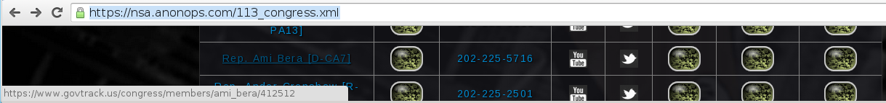
On the end of the URL the last page brought you to, there will be a number. This number is the candidate's GovTrack "Identification Number", in this case "412512". This number goes in the template field id="some_id" shown below, and the name of the candidate goes in the real_name="name" field.
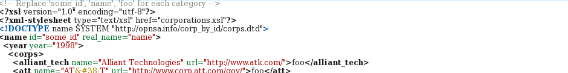
When complete, these two fields will look as they do below
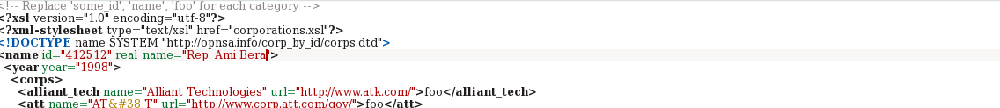
Now we are ready to proceed to the FEC's Financial Disclosure Website and search for the candidate's information as shown below. It is recommended to use the Candidate's Last Name, as their "Common" name often differs from their "Legal" name, as it does in this case. The FEC uses the candidate's Legal name.
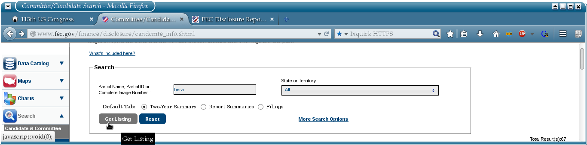
After searching for the candidate, you will be brought to a page like the one shown below, where we see that Ami Bera has the legal name "Amerish". To resolve any discrepencies between common name and legal name, we recommend the use of Ballot Pedia or Wikipedia. Proceed to click on the link next to the candidate's name, as shown below.
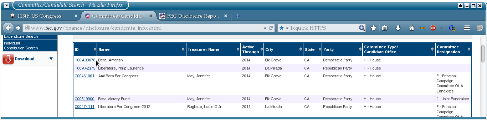
This will bring you to a page like the one below
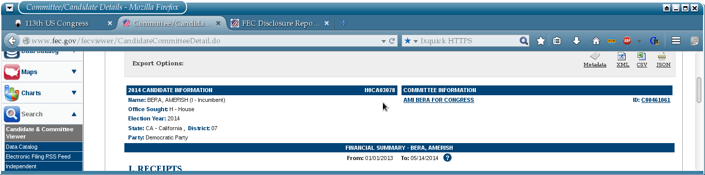
A little ways down on the screen, you will see links that look similar to those below. We are interested in all these links, excepting "Candidate Contributions", as these are contributions to the candidate from his/her self. We will now proceed to Search for each of the categories listed in the template, per year. The FEC's website defaults to 2014 to start, so proceed to the year 2014 in the template, as shown below.

2014 Contributions Template
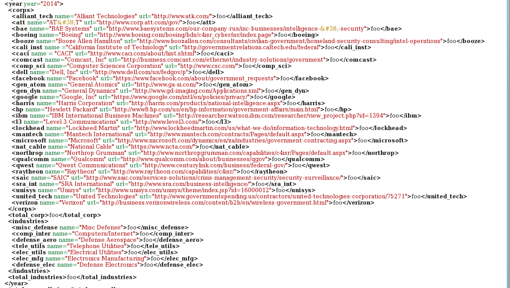
Be sure to search through every possible index as shown below

A completed 2014 template for Ami Bera looks like below
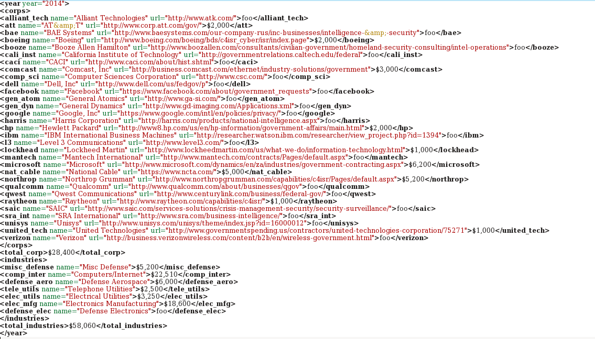
Repeat the steps above for the available years in the drop-down menu, as shown below, migrating to the appropriate place in the template as you proceed.

We will now verify against the old FEC system that no donations are missed, as shown in the two images below
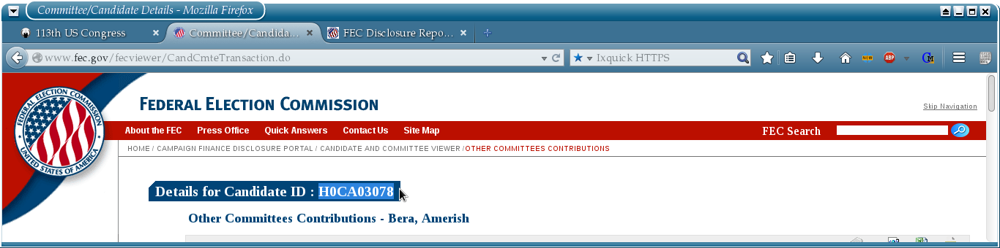
As you can see, the FEC "Identification Code" for this candidate is "H0CA03078", append this to the http://images.nictusa.com/cgi-bin/can_give/ URL, as shown below. Use the information on this page to verify your already collected information.
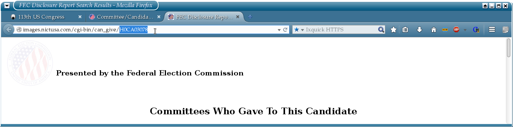
Please be sure to include the citation of the source of your data, in this format shown below
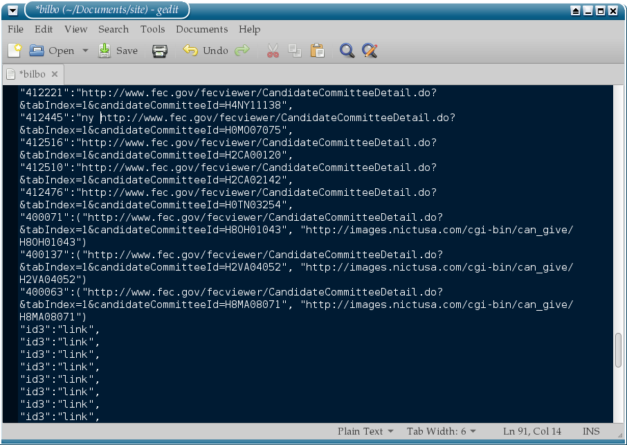
When completed, upload your template to a pastebin of your choice, and inform a member of the operation of the link to this pastebin. We will upload it to the website post haste. We appreciate your help and participation!
Happy Documenting!
First proceed to download template.zip from here and unzip it in a directory of your choosing. This file contains a template that will be filled out with the information from the FEC's database. Open this file in your favorite text editor.
In this example, we will documenting Amerish "Ami" Bera.
Now Proceed to the OpNSA's 113th Congress Website to select which candidate you would like to document, and proceed to click on his name, this will bring you to the GovTrack website for that candidate.
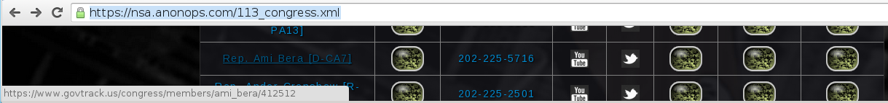
On the end of the URL the last page brought you to, there will be a number. This number is the candidate's GovTrack "Identification Number", in this case "412512". This number goes in the template field id="some_id" shown below, and the name of the candidate goes in the real_name="name" field.
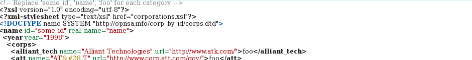
When complete, these two fields will look as they do below
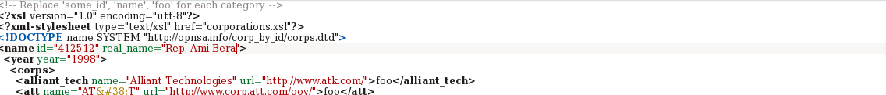
Now we are ready to proceed to the FEC's Financial Disclosure Website and search for the candidate's information as shown below. It is recommended to use the Candidate's Last Name, as their "Common" name often differs from their "Legal" name, as it does in this case. The FEC uses the candidate's Legal name.
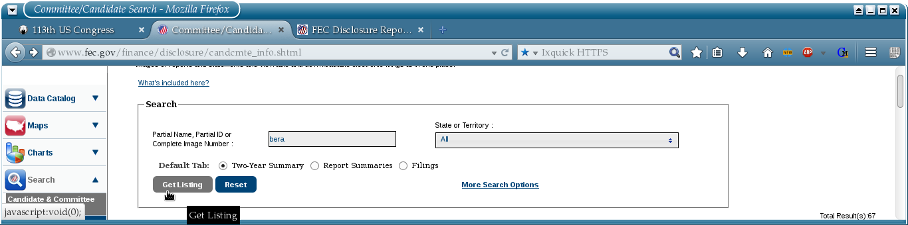
After searching for the candidate, you will be brought to a page like the one shown below, where we see that Ami Bera has the legal name "Amerish". To resolve any discrepencies between common name and legal name, we recommend the use of Ballot Pedia or Wikipedia. Proceed to click on the link next to the candidate's name, as shown below.
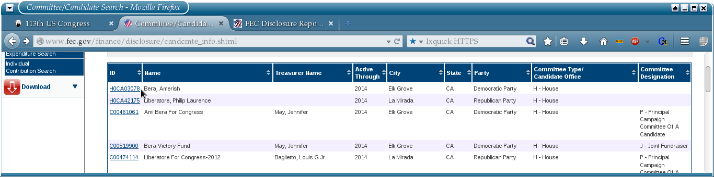
This will bring you to a page like the one below
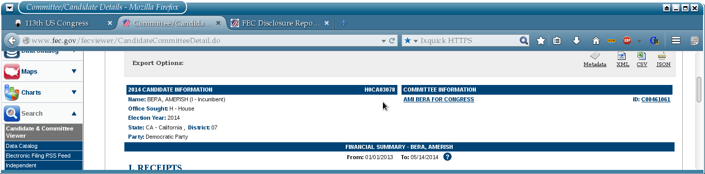
A little ways down on the screen, you will see links that look similar to those below. We are interested in all these links, excepting "Candidate Contributions", as these are contributions to the candidate from his/her self. We will now proceed to Search for each of the categories listed in the template, per year. The FEC's website defaults to 2014 to start, so proceed to the year 2014 in the template, as shown below.
2014 Contributions Template
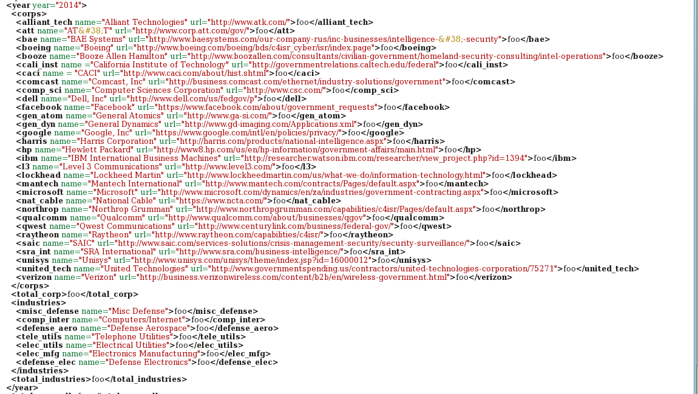
Be sure to search through every possible index as shown below
A completed 2014 template for Ami Bera looks like below
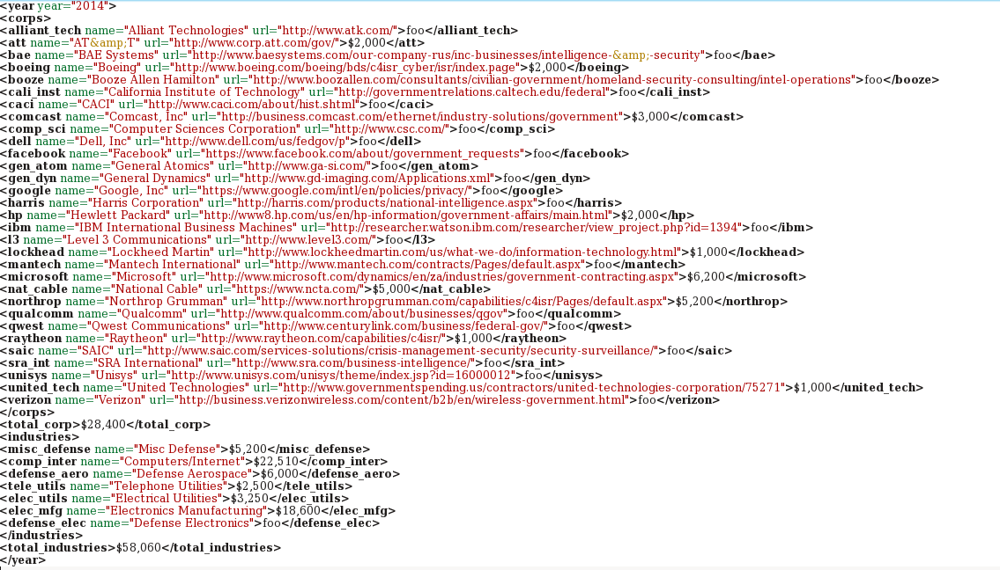
Repeat the steps above for the available years in the drop-down menu, as shown below, migrating to the appropriate place in the template as you proceed.
We will now verify against the old FEC system that no donations are missed, as shown in the two images below
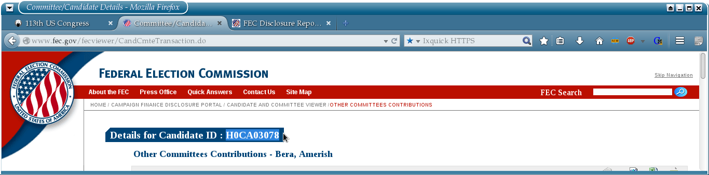
As you can see, the FEC "Identification Code" for this candidate is "H0CA03078", append this to the http://images.nictusa.com/cgi-bin/can_give/ URL, as shown below. Use the information on this page to verify your already collected information.
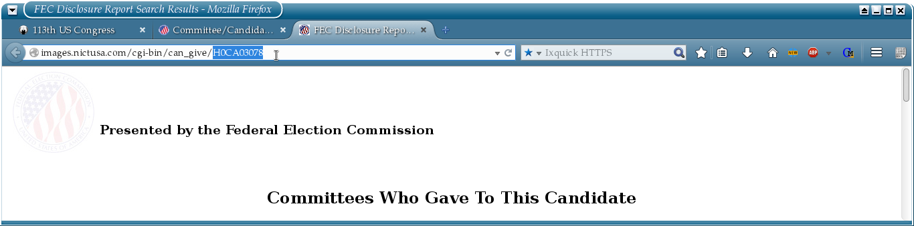
Please be sure to include the citation of the source of your data, in this format shown below
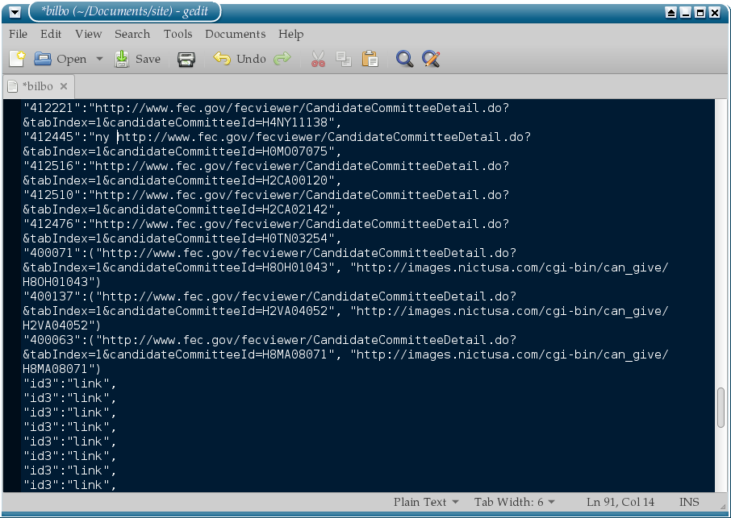
When completed, upload your template to a pastebin of your choice, and inform a member of the operation of the link to this pastebin. We will upload it to the website post haste. We appreciate your help and participation!
Happy Documenting!
Special thanks to the AnonOps Network